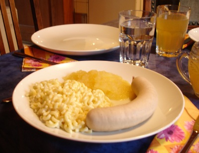

| Zutaten für 4 Personen: | |
| 2 Paar | Appenzeller Siedwürste |
| 300g | Hörnli |
| 1 | Zwiebel |
| 2 El | Butter |
| Peterli | |
| 1.8 dl | Halbrahm |
| 150g | geriebener Appenzellerkäse |
| Muskat | |
| 1.5 dl | Apfelsaft |
| 2 El | Zitronensaft |
| 2 El | Zucker |
| 1/2 | Zimtstange |
| 800g | Äpfel z.B. Boskop |
Zubereitung: ca. 1 Stunde / Ziehen lassen: ca. 20 Minuten
Siedwürste in knapp siedendem Wasser 20 Minuten ziehen lassen.
Hörnli: Teigwaren in siedendem Salzwasser al dente kochen, abgiessen, abtropfen lassen.
Zwiebel in Streifen schneiden und in Butter andämpfen. Petersilie fein hacken und kurz mitdämpfen.
Mit Rahm ablöschen, aufkochen, mit Käse zu den Hörnli geben, mischen, mit Salz und Pfeffer abschmecken.
Äpfel schälen und ohne Kerngehäuse in Stücke schneiden.
Apfelmus: Apfel- und Zitronensaft sowie Zucker und nach Belieben Zimtstange aufkochen.
Äpfel beifügen, zugedeckt 10-12 Minuten weich köcheln, Zimtstange entfernen.
Äpfel mitsamt Flüssigkeit pürieren.
Siedwürste und Chäshörnli auf vorgewärmten Tellern anrichten. Apfelmus dazu servieren.
Aus Le Menu 11/2008 Seite 89 von Patricia Krummenacher im Dezember 2008 erhalten.
Hat ausgezeichnet geschmeckt. RE 19.7.2009
@LINKBACK_TAG@ @WAKELOCK@